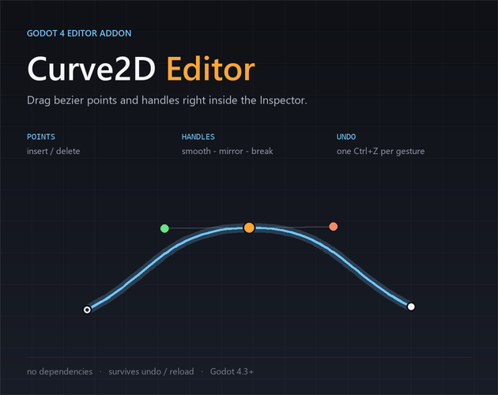

Godot 4.3+ · editor addon · release 1.0.0
Curve2D Editor
Godot draws a Curve2D but only lets you edit it through two numbers per
point. This addon gives you the curve itself: drag the points and tangent handles inside the
editor, with every gesture as one step in Godot's own undo history.
Single-title commercial license · Instant download · Same ZIP for Windows, macOS and Linux.

What it does
Visual point editing
Drag points directly; the curve and the 2D viewport update live. No inspector scroll, no dialing numbers until it looks right.
Tangent handles with modes
Smooth, Mirror In/Out and Break Tangents. Smoothness is derived from the curve data, so it survives reopening the window, undo/redo and scene reloads — nothing is cached in the editor.
Insert and delete points
Double-click empty space to add a point; Delete or Backspace removes the selected one.
Real undo, not a custom stack
Each drag and each point edit is one step routed through Godot's
EditorUndoRedoManager, so Ctrl+Z and the Undo History panel
both behave exactly as they do for any built-in tool.
Zoom, pan, fit
Wheel zooms about the cursor, middle-drag pans, F frames the whole curve. Display only — it never touches your point coordinates.
Fits your project, not the other way round
Every edit is written straight into the Curve2D resource, so curves behave like
hand-authored ones. No side-car files, no lock-in, no cleanup when you remove the addon.
What it doesn't do
- No grid snapping. A snap field exists inside the canvas code, but no UI reaches it — it isn't in the feature list and it isn't in the build you get.
- No "Insert" key. Points are added by double-click. If you only read the keyboard shortcut in another listing, that one was wrong.
- No runtime component. Nothing to attach to a node, no autoload, no signals to wire.
- Not Godot 3. It uses 4.x editor APIs and will not load in 3.5.
- Not a mesh or path-following tool. It edits
Curve2Dresources; it doesn't bake, extrude, or generate geometry.
If any of that is what you need, don't buy it. Ask on the Discord and I'll tell you where it stands.
Specs
| Version | 1.0.0 |
|---|---|
| Engine | Godot 4.3+ (developed and tested on 4.7.2-stable) |
| Language | GDScript, @tool editor scripts only |
| Download | One ZIP, 13.7 KB — Windows, macOS and Linux |
| Contents | addons/curve2d_editor/ (7 scripts + plugin.cfg) and a README |
| License | Single-title commercial, one licence per developer |
| Dependencies | None. No binaries, no third-party libraries, no autoload |
Install
- Unzip and copy
addons/curve2d_editor/into your project. - Open Project → Project Settings → Plugins and enable Curve2D Editor.
- Select a node with a
Curve2Dproperty (@export var path: Curve2D). - A Curve2D Editor row appears in the Inspector — press Edit, or New to create a curve.
your_project/
└── addons/
└── curve2d_editor/
├── plugin.cfg
├── plugin.gd
├── curve_canvas.gd
├── curve_editor_window.gd
├── curve_inspector.gd
├── curve_edit_ops.gd
└── curve_utils.gd
License
You can
- Use it in unlimited personal and commercial Godot projects.
- Ship games made with it — no royalties, no attribution required.
- Modify it for your own project.
You can't
- Redistribute or resell the addon itself, modified or not.
- Bundle it into another asset pack or template.
One licence per developer. Studio seats and site licences on request: dreddsassets@gmail.com.
FAQ
Will uninstalling it break my curves?
No. The addon writes into the Curve2D resource itself. Remove the folder, disable
the plugin, and your curves are byte-for-byte what they were.
Does it add anything at runtime?
No. Every file is a @tool editor script. Nothing is added to your scenes, no
autoload is registered, and no project settings are written.
Does it work in Godot 3.x?
No. It uses Godot 4 editor APIs (EditorInspectorPlugin,
EditorUndoRedoManager) that don't exist in 3.x.
Is undo really the editor's undo?
Yes. Each gesture pushes one step through EditorUndoRedoManager for the scene that
owns the object, so Ctrl+Z and the Undo History panel both work, and undo
doesn't wipe unrelated edits.
Can I use it commercially?
Yes, on unlimited projects, with no royalties. You just can't redistribute or resell the addon itself.
Is there grid snapping?
Not in 1.0.0. A snap field exists in the canvas internals but no UI exposes it, so it's not advertised. When it ships, it'll be in the changelog below first.
How do I get support or report a bug?
Email dreddsassets@gmail.com or ask on the Discord, with your Godot version and — if possible — the scene that reproduces it.
Changelog
1.0.0 — first release
- Visual point editing with live viewport updates.
- Tangent handles: Smooth, Mirror In/Out, Break Tangents.
- Double-click to insert a point; Delete/Backspace to remove.
- One undo step per gesture via
EditorUndoRedoManager. - Wheel zoom about cursor, middle-drag pan, F to fit.
Disclosure: the GDScript is drafted with a locally hosted open-weights model, then reviewed, tested and corrected by hand. Nothing ships until the test suite and a parse check pass in a clean Godot 4.7 project.
Curve2D Editor
$6.99 · Godot 4.3+ · 13.7 KB · single-title commercial license